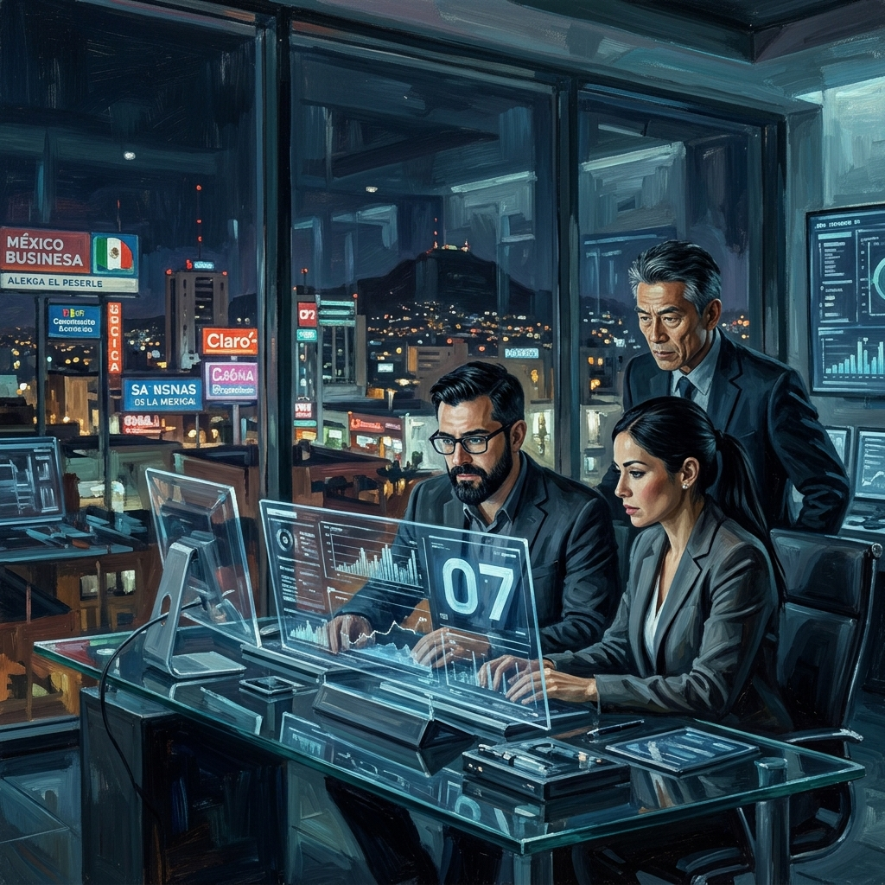
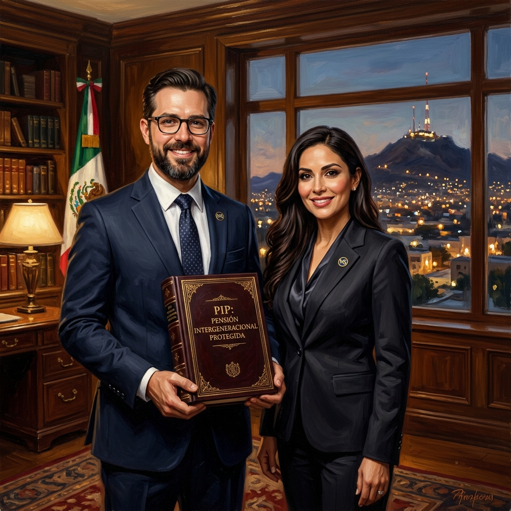
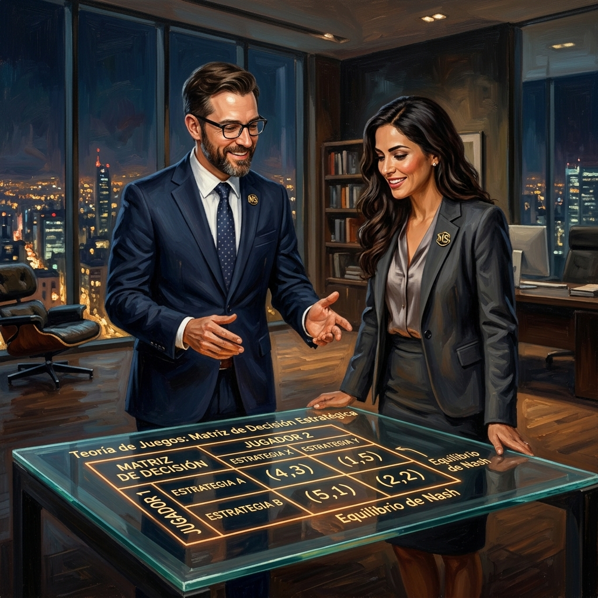
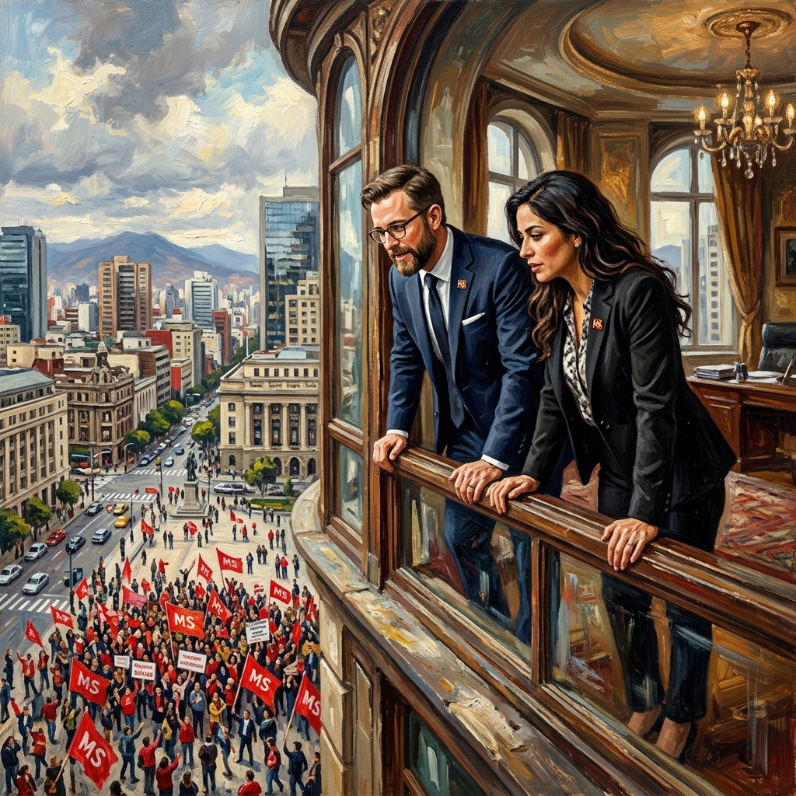
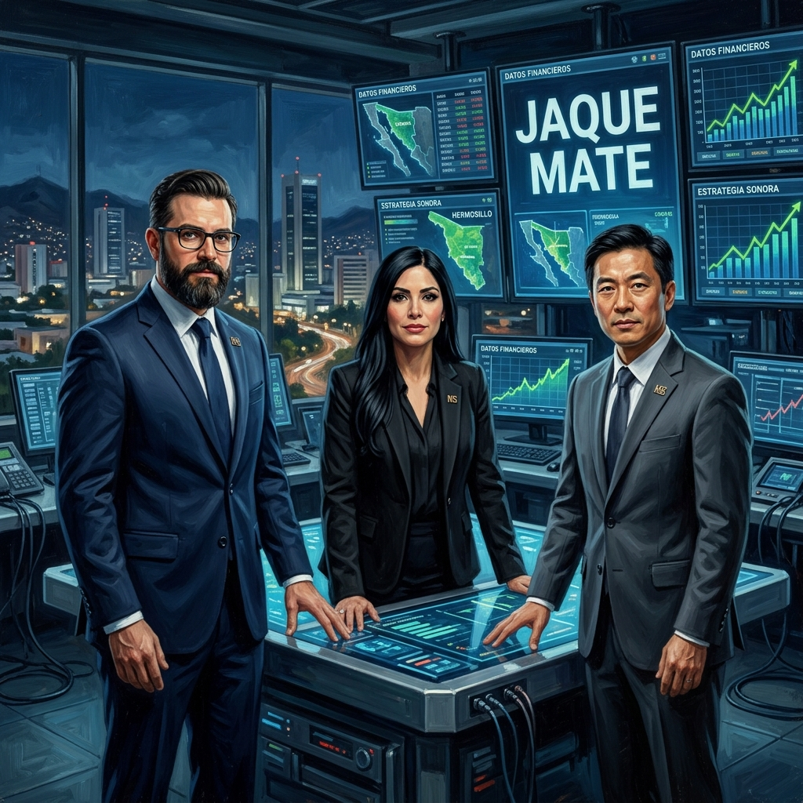

Operación Mesa Técnica. La inteligencia aplicada del Magisterio Sonorense.
Mapeo de flujos de poder en Hermosillo para asegurar la victoria.
Detección de excedentes federales ocultos por la autoridad.
Inicio de negociaciones técnicas con respaldo federal.
Unidad inquebrantable frente a la cooptación y fragmentación.
La verdad técnica vs la narrativa de "sin presupuesto" de la SEC.

Pensión Intergeneracional Protegida: El blindaje del futuro magisterial.

Forzando a la autoridad a la única salida racional: Negociar.
Auditoria 1866 de la ASF: La ruta del dinero desviado.

1 de Mayo: La fuerza de la base como garantía de cumplimiento.

Ejecución terminal del Código del Dragón. Victoria técnica y social. JAQUE MATE.